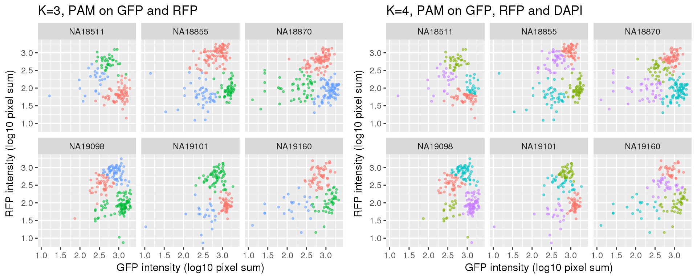

Classify cells based on FUCCI using PAM
Joyce Hsiao
Last updated: 2018-02-23
Code version: 7e30faa
Overview/Results
I tried partition around the medoid (PAM) on the data that have already been filtered for quality single cells using both RNA-sequencing and microscopy data. The eventual goal is to select a subset of cells that are “representative” of each cell cycle phase.
\(~\)
Results:
First, note that the 990 samples in this dataset passed microscopy filters and sequencing data filters. Microscopy filters based on DAPI intensities exlude samples that are detected with low or no DNA content and also samples with more than one nucleus. In other words, microscopy filters exclude cells that are in G0 phase, which typically have low DNA content. In addition, microscopy filters based on GFP and RFP exlude samples that are either in G0 phase or in M phase.
Standard flow cytometry analysis using GFP and RFP can classify cells into G1, G1/S, and G2/M. We fit k=3 and k=4 using PAM on GFP and RFP and also on GFP, RFP, and DAPI.
Results for either k=3 or k=4 didn’t change after adding DAPI measurements.
Results of partitions between k=3 and k=4: I am mainly interested in k=3 case. I will use k=4 results in the quality checks for k=3 results. In brief, I’ll look at cell cycle gene expression profiles of both of these cases. If the additional partition in k=4 is similar to one of the other three partitions, then we can say k=3 fits better.
After we decide on the clustering of cells, we can compute silhouette index for each cell to determine how well each cell fits into its cluster. Then, we can use silhouette index to choose the most “represented cells” from each cluster, for example selecting cells that are the closet to cluster centers.
Data and packages
Packages
library(Biobase)
library(ggplot2)
library(cowplot)
library(cluster)
library(data.table)Load data the intensities adjusted for batch effect.
df <- readRDS(file="../data/eset-filtered.rds")
pdata <- pData(df)
fdata <- fData(df)
# # select endogeneous genes
# counts <- exprs(df)[grep("ERCC", rownames(df), invert=TRUE), ]
#
# # cpm normalization
# log2cpm <- log2(t(t(counts+1)*(10^6)/colSums(counts)))
pdata.adj <- readRDS("../output/images-normalize-anova.Rmd/pdata.adj.rds")Raw data
Fitting PAM for cells using only green and red intensity measurements.
ints <- with(pdata.adj, data.frame(rfp.median.log10sum,
gfp.median.log10sum,
dapi.median.log10sum))
ints <- data.frame(ints,
chip_id = as.factor(pdata$chip_id))
k_list <- c(3:4)
pam_fit_green_red <- lapply(k_list, function(k) {
fit <- lapply(1:uniqueN(ints$chip_id), function(i) {
df_sub <- subset(ints, chip_id==unique(chip_id)[i],
select = -c(chip_id, dapi.median.log10sum))
fit_sub <- pam(df_sub, k=k, diss=F)
return(fit_sub)
})
names(fit) <- unique(ints$chip_id)
return(fit)
})
names(pam_fit_green_red) <- paste0("k", k_list)
pam_fit_green_red_plot <- vector("list", length(pam_fit_green_red))
for (k in c(1:length(k_list))) {
pp <- do.call(rbind, lapply(1:uniqueN(ints$chip_id), function(i) {
df_sub <- subset(ints, chip_id==unique(chip_id)[i])
df_sub <- data.frame(df_sub, cluster=as.factor(pam_fit_green_red[[k]][[i]]$clustering))
return(df_sub)
}))
pam_fit_green_red_plot[[k]] <- pp
}Fitting PAM for cells using all three intensity measurements.
pam_fit_green_red_dapi <- lapply(k_list, function(k) {
fit <- lapply(1:uniqueN(ints$chip_id), function(i) {
df_sub <- subset(ints, chip_id==unique(chip_id)[i],
select = -chip_id)
fit_sub <- pam(df_sub, k=k, diss=F)
return(fit_sub)
})
names(fit) <- unique(ints$chip_id)
return(fit)
})
names(pam_fit_green_red_dapi) <- paste0("k", k_list)
pam_fit_green_red_dapi_plot <- vector("list", length(pam_fit_green_red_dapi))
for (k in c(1:length(k_list))) {
pp <- do.call(rbind, lapply(1:uniqueN(ints$chip_id), function(i) {
df_sub <- subset(ints, chip_id==unique(chip_id)[i])
df_sub <- data.frame(df_sub, cluster=as.factor(pam_fit_green_red_dapi[[k]][[i]]$clustering))
return(df_sub)
}))
pam_fit_green_red_dapi_plot[[k]] <- pp
}k=3
k=4
k=3 versus k=4

Adjusted data
Fitting PAM for cells using only green and red intensity measurements.
ints <- with(pdata.adj, data.frame(rfp.median.log10sum.adjust.ash,
gfp.median.log10sum.adjust.ash,
dapi.median.log10sum.adjust.ash))
ints <- data.frame(ints,
chip_id = as.factor(pdata$chip_id))
k_list <- c(3:4)
pam_fit_green_red <- lapply(k_list, function(k) {
fit <- lapply(1:uniqueN(ints$chip_id), function(i) {
df_sub <- subset(ints, chip_id==unique(chip_id)[i],
select = -c(chip_id, dapi.median.log10sum.adjust.ash))
fit_sub <- pam(df_sub, k=k, diss=F)
return(fit_sub)
})
names(fit) <- unique(ints$chip_id)
return(fit)
})
names(pam_fit_green_red) <- paste0("k", k_list)
pam_fit_green_red_plot <- vector("list", length(pam_fit_green_red))
for (k in c(1:length(k_list))) {
pp <- do.call(rbind, lapply(1:uniqueN(ints$chip_id), function(i) {
df_sub <- subset(ints, chip_id==unique(chip_id)[i])
df_sub <- data.frame(df_sub, cluster=as.factor(pam_fit_green_red[[k]][[i]]$clustering))
return(df_sub)
}))
pam_fit_green_red_plot[[k]] <- pp
}Fitting PAM for cells using all three intensity measurements.
pam_fit_green_red_dapi <- lapply(k_list, function(k) {
fit <- lapply(1:uniqueN(ints$chip_id), function(i) {
df_sub <- subset(ints, chip_id==unique(chip_id)[i],
select = -chip_id)
fit_sub <- pam(df_sub, k=k, diss=F)
return(fit_sub)
})
names(fit) <- unique(ints$chip_id)
return(fit)
})
names(pam_fit_green_red_dapi) <- paste0("k", k_list)
pam_fit_green_red_dapi_plot <- vector("list", length(pam_fit_green_red_dapi))
for (k in c(1:length(k_list))) {
pp <- do.call(rbind, lapply(1:uniqueN(ints$chip_id), function(i) {
df_sub <- subset(ints, chip_id==unique(chip_id)[i])
df_sub <- data.frame(df_sub, cluster=as.factor(pam_fit_green_red_dapi[[k]][[i]]$clustering))
return(df_sub)
}))
pam_fit_green_red_dapi_plot[[k]] <- pp
}k=3
k=4

k=3 versus k=4
Session information
R version 3.4.1 (2017-06-30)
Platform: x86_64-redhat-linux-gnu (64-bit)
Running under: Scientific Linux 7.2 (Nitrogen)
Matrix products: default
BLAS/LAPACK: /usr/lib64/R/lib/libRblas.so
locale:
[1] LC_CTYPE=en_US.UTF-8 LC_NUMERIC=C
[3] LC_TIME=en_US.UTF-8 LC_COLLATE=en_US.UTF-8
[5] LC_MONETARY=en_US.UTF-8 LC_MESSAGES=en_US.UTF-8
[7] LC_PAPER=en_US.UTF-8 LC_NAME=C
[9] LC_ADDRESS=C LC_TELEPHONE=C
[11] LC_MEASUREMENT=en_US.UTF-8 LC_IDENTIFICATION=C
attached base packages:
[1] parallel stats graphics grDevices utils datasets methods
[8] base
other attached packages:
[1] data.table_1.10.4-3 cluster_2.0.6 cowplot_0.9.2
[4] ggplot2_2.2.1 Biobase_2.38.0 BiocGenerics_0.24.0
loaded via a namespace (and not attached):
[1] Rcpp_0.12.15 knitr_1.20 magrittr_1.5 munsell_0.4.3
[5] colorspace_1.3-2 rlang_0.2.0 stringr_1.3.0 plyr_1.8.4
[9] tools_3.4.1 grid_3.4.1 gtable_0.2.0 git2r_0.21.0
[13] htmltools_0.3.6 yaml_2.1.16 lazyeval_0.2.1 rprojroot_1.3-2
[17] digest_0.6.15 tibble_1.4.2 evaluate_0.10.1 rmarkdown_1.8
[21] labeling_0.3 stringi_1.1.6 compiler_3.4.1 pillar_1.1.0
[25] scales_0.5.0 backports_1.1.2 This R Markdown site was created with workflowr